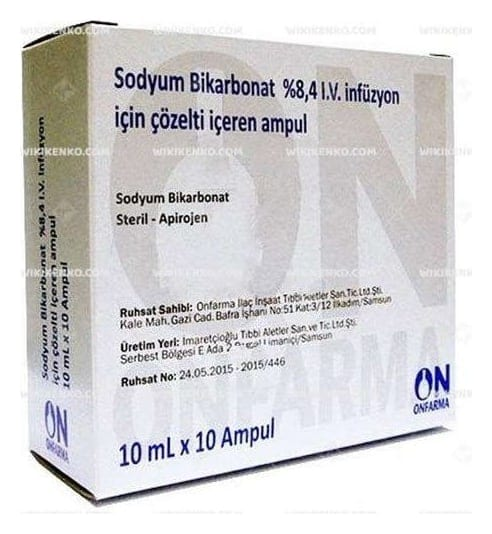

Sodyum Bikarbonat %8,4 IV İnfüzyon İçin Çözelti İçeren 10 Ampul

Ne için kullanılır
KT · Bölüm 1Bu Kullanma Talimatı'nın bölümleri henüz ayrıştırılmadı; tam metin alt bilgideki TİTCK PDF bağlantısında.

Bu Kullanma Talimatı'nın bölümleri henüz ayrıştırılmadı; tam metin alt bilgideki TİTCK PDF bağlantısında.